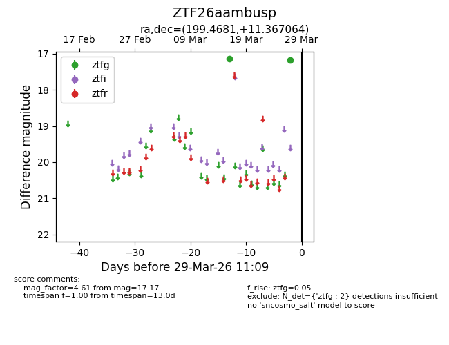
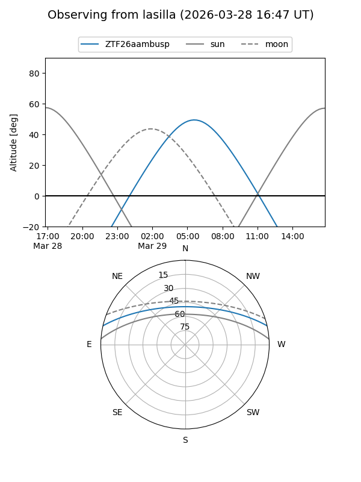
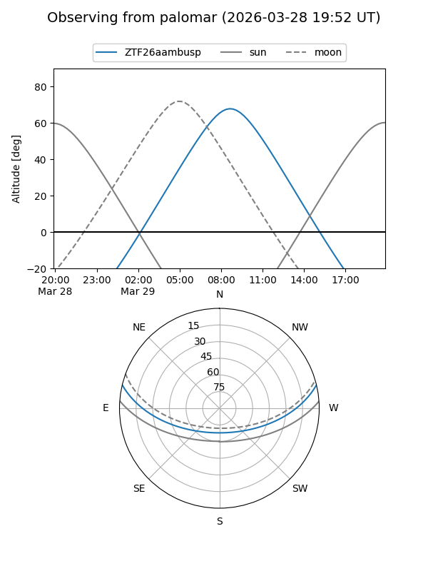

ZTF26aambusp
Target ZTF26aambusp at 2026-03-29 11:12
Aliases and brokers:
FINK: link
Lasair: link
ALeRCE: link
alt names
ZTF26aambusp (ztf,fink_ztf)
Coordinates:
equatorial (ra, dec) = 199.4681,+11.36706
equatorial (HMS+DMS) = 13:17:52.34,+11:22:01.43
galactic (l, b) = (325.7130,+73.05887)
Flags:
Photometry:
last ztfg=17.17
2 ztfg detections
Lightcurve

Visibility


Additional plots